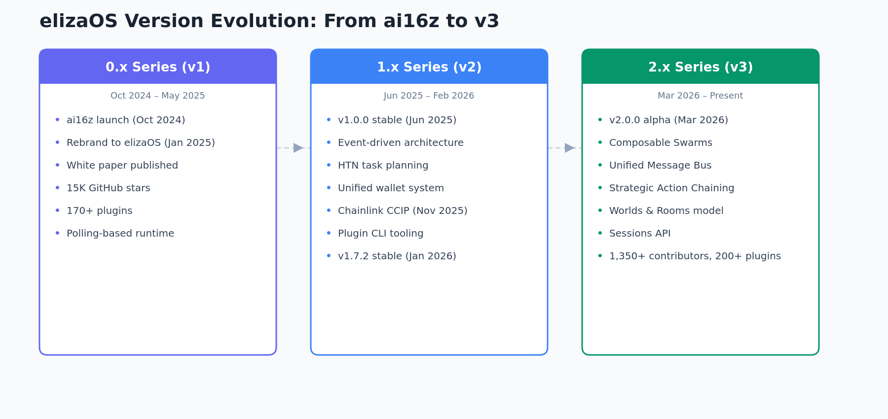
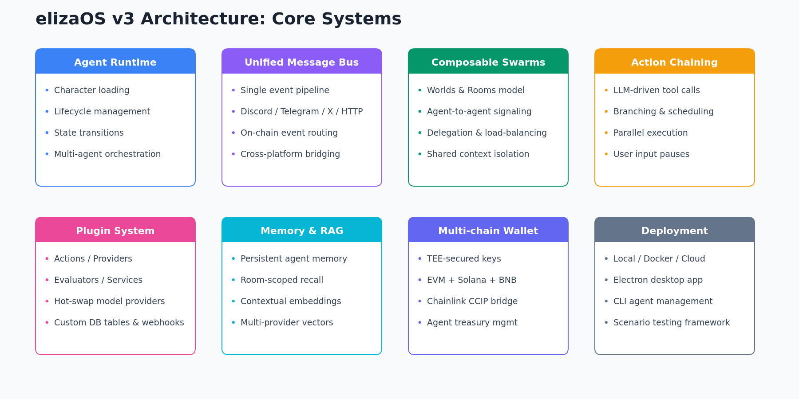
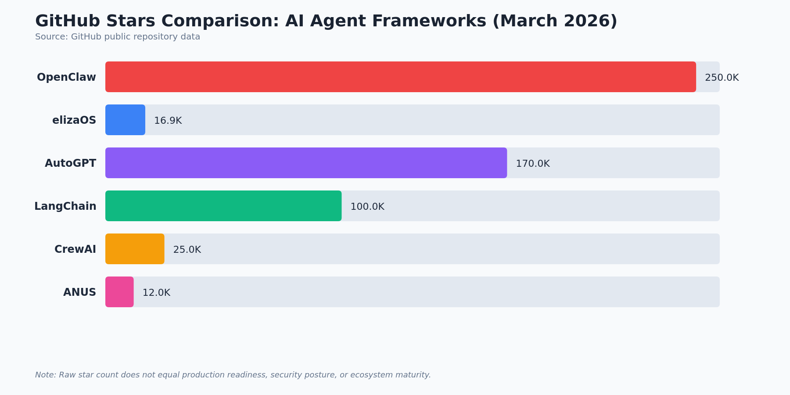
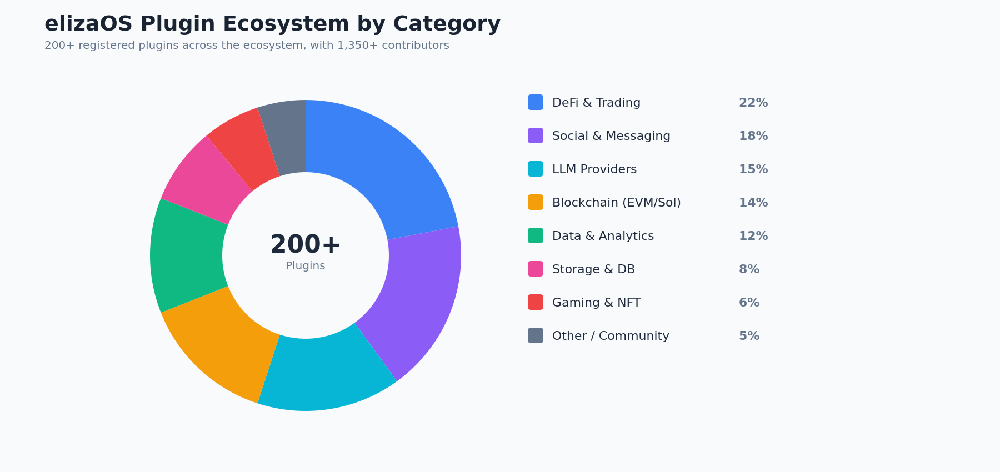
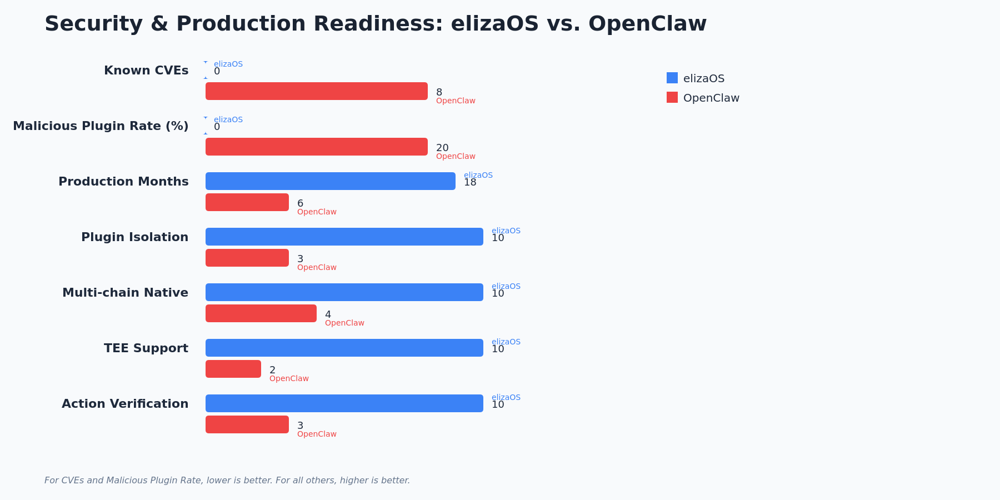
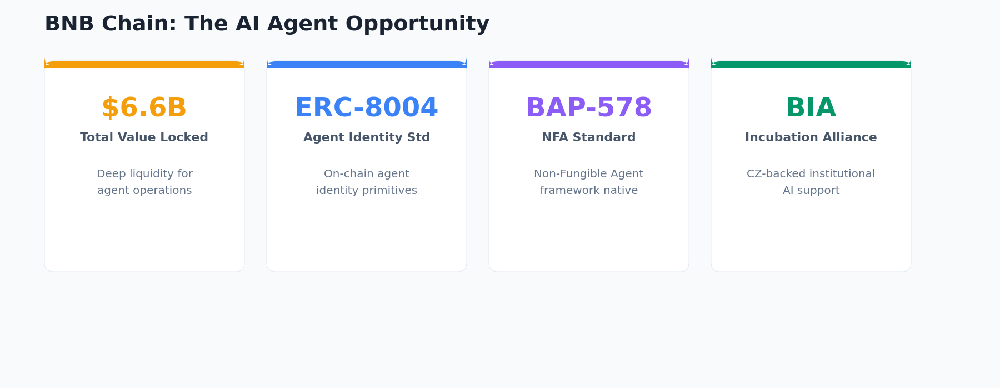

How elizaOS Pioneered Autonomous Agents Through Three Generations, Why OpenClaw Proved the Thesis, and What Milady on BNB Chain Means for the Future
March 2026 | Comprehensive Research Analysis
In October 2024, developer Shaw launched ai16z, an experiment in autonomous AI agents managing a crypto fund on Solana. What began as a memecoin curiosity quickly revealed deeper potential: the underlying framework, initially called Eliza, demonstrated that large language models could do far more than chat. They could trade, manage treasuries, and interact across blockchain protocols with minimal human oversight.
By January 2025, Eliza had been rebranded to elizaOS, shedding the memecoin persona in favor of a serious open-source identity. The framework's TypeScript foundation made it accessible to web developers, while its plugin architecture allowed rapid extension. Within weeks of its public release, elizaOS accumulated over 15,000 GitHub stars, making it one of the fastest-growing AI repositories of 2024 to 2025.
The framework's architecture reflected hard-won lessons: a modular runtime that could host multiple AI characters simultaneously, each with its own personality, memory, and action capabilities. This was not just another chatbot wrapper. It was infrastructure for autonomous digital entities.
Understanding elizaOS today requires tracing its evolution through three distinct generations, each representing a fundamental rethinking of how autonomous agents should be built and deployed.
The 0.x series spanned from the initial v0.1.0 release in late October 2024 through v0.25.19 in May 2025. This was the proving ground. The original architecture used a polling-based runtime where agents checked for new information on fixed intervals. Character files defined agent personalities through JSON configuration, and a growing library of clients (Discord, Telegram, Twitter) let agents interact across platforms.
Key milestones of the 0.x era included the ai16z-to-elizaOS rebrand in January 2025, the release of the original white paper outlining the vision for autonomous agent swarms, and the rapid growth of the plugin ecosystem to 170+ community-contributed packages. The framework gained support for multiple model providers (OpenAI, Anthropic, Llama local), basic memory systems backed by SQLite and PostgreSQL, and early DeFi integrations on Solana. By the time the 0.x series concluded, elizaOS had attracted over 1,000 contributors and established itself as the reference implementation for crypto-native AI agents.
The 1.x series, beginning with v1.0.0 in June 2025 and running through v1.7.2 in January 2026, represented a ground-up rearchitecture informed by over a year of production deployments. The polling model gave way to a full event-driven system. Agents could now react in real time to blockchain events, social media mentions, price movements, and inter-agent messages. Latency for critical operations dropped from seconds to milliseconds.
The 1.x series introduced Hierarchical Task Network (HTN) planning, replacing simple prompt-response loops with structured task decomposition. An agent asked to rebalance a portfolio could break this into market analysis, risk assessment, trade planning, and execution steps, each with its own verification checkpoints. This was a major leap in reliability for financial operations.
Other major additions included a unified multi-chain wallet secured by TEE (Trusted Execution Environment) technology, Chainlink CCIP integration for cross-chain operations, and a CLI-based plugin tooling system that made it straightforward for developers to create, test, and publish plugins. The 1.x series also expanded chain support beyond Solana to include Ethereum, Polygon, Arbitrum, and BNB Chain.
The 2.x series entered alpha in February 2026 (v2.0.0-alpha.26) and has been iterating rapidly, reaching v2.0.0-alpha.31 by March 9, 2026. elizaOS v3 is not merely an upgrade; it is a philosophical shift from individual agents to composable agent systems. The architecture introduces four breakthrough concepts that redefine what AI agent frameworks can do.
The v3 ecosystem has also matured significantly. As of March 2026, elizaOS boasts 16,900+ GitHub stars, 5,300+ forks, 1,350+ contributors, and over 200 production-ready plugins. The Sessions API provides persistent state management across agent interactions, and the new plugin architecture supports hot-reloading and dependency injection.

Figure 1: elizaOS Development Timeline -- 0.x (v1), 1.x (v2), 2.x (v3)

Figure 2: elizaOS v3 Architecture -- Core Systems
The initial excitement around AI agents gave way to what the community called "Agent Winter." Between March and August 2025, a series of high-profile failures eroded public confidence. Autonomous trading bots lost millions in poorly understood market conditions. Social media agents posted offensive content. Treasury management systems were exploited through prompt injection attacks.
The fundamental problem was not the technology itself but the gap between demos and production systems. Most frameworks treated safety as an afterthought, bolting on guardrails after the fact rather than building them into the core architecture. Users who deployed agents in real financial environments discovered that "works in testing" and "works with real money" were very different standards.
During this period, the elizaOS team focused on the hard engineering problems: reliable state management, secure plugin sandboxing, and deterministic action execution. This was the unsexy but essential work that produced the battle-tested 1.x series and laid the groundwork for the composable v3 architecture.

Figure 3: GitHub Stars Comparison, Major AI Agent Frameworks (as of March 2026)
A framework is only as valuable as its ecosystem, and elizaOS v3 has built one of the most comprehensive in the AI agent space. With 200+ production-ready plugins and growing, the ecosystem covers DeFi, social media, data analysis, gaming, and cross-chain operations.
PayAI represents one of the most mature applications built on elizaOS. As a decentralized marketplace for AI agent services, it has processed over 110,000 payments, demonstrating that agent-to-agent commerce is not just theoretical. PayAI's architecture allows any elizaOS agent to offer services and receive payment automatically through smart contracts.
One of the earliest and most visible elizaOS agents, DegenSpartanAI demonstrated autonomous trading and community engagement on Solana. Its public track record provided crucial real-world validation of the framework's financial capabilities.
Projects like Bored Generation showcase elizaOS's versatility beyond finance. These NFT-native AI agents manage creative portfolios, interact with communities, and collaborate with each other on generative art projects, all running on elizaOS infrastructure.

Figure 4: elizaOS v3 Plugin Ecosystem by Category (200+ Production Plugins)
"2026 saw OpenClaw take center stage, proving elizaOS's thesis right."
OpenClaw's meteoric rise in early 2026 is impossible to ignore. With over 250,000 GitHub stars and mainstream media coverage from outlets including Bloomberg and TechCrunch, it has become the public face of AI agents. Its natural language interface for creating agents lowered the barrier to entry dramatically, bringing millions of new users into the ecosystem.
Credit where it is due: OpenClaw demonstrated that the market for autonomous agents was far larger than even optimists predicted. It validated the core thesis that elizaOS had been building toward since 2024 -- that AI agents would become a primary interface for digital interaction.
However, OpenClaw's rapid growth has exposed significant concerns that merit serious examination:

Figure 5: Security and Production Readiness -- elizaOS v3 vs. OpenClaw
Milady represents the culmination of everything elizaOS has built across three generations. It is not merely another AI chat application. It is a local-first, privacy-respecting AI assistant that demonstrates the full capabilities of the elizaOS v3 architecture in a consumer-facing product.
Milady's expansion to BNB Chain is not arbitrary. It reflects a calculated assessment of where the AI agent opportunity is most acute and least served.

Figure 6: BNB Chain Opportunity Snapshot
| Feature | elizaOS v3 (2.x) | OpenClaw |
|---|---|---|
| Architecture | Composable swarms, unified message bus | Monolithic runtime |
| Planning System | Strategic action chaining + HTN | Prompt chaining |
| Multi-chain Support | Native (ETH, SOL, BNB via CCIP) | Ethereum primary |
| Security Record | 0 known CVEs | 8+ CVEs (2025 to 2026) |
| Plugin Ecosystem | 200+ verified, hot-reloadable | ClawHub (20% flagged) |
| Marketplace Maturity | PayAI: 110K+ payments | Early-stage |
| Local Execution | Yes (Electron, TEE, Worlds) | Cloud-dependent |
| Production Track Record | 18+ months across 3 generations | ~6 months |
| BSC Integration | Native, with ERC-8004 | Limited |
| Agent Coordination | Composable swarms, Rooms | Single-agent only |
| Contributors | 1,350+ | ~200 |
The AI agent landscape in 2026 is defined by a tension between hype and substance. OpenClaw has captured the public imagination, and its contribution to mainstream awareness of AI agents is genuine and valuable. But awareness and infrastructure are different things.
elizaOS v3 offers what OpenClaw cannot: three generations of iterative engineering, from the scrappy 0.x experiments through the battle-tested 1.x architecture to today's composable swarm intelligence. It brings a security-first design with zero known CVEs, a mature plugin ecosystem with real economic activity (110,000+ PayAI transactions), and native multi-chain support designed for the complexities of Web3 operations.
Milady brings these capabilities to users in a form they can actually use -- as a desktop application that respects privacy, orchestrates multiple AI models, and connects to the growing BNB Chain ecosystem. The timing is deliberate: BNB Chain's $6.6B in TVL, institutional support for AI integration, and purpose-built agent standards (ERC-8004, BAP-578) create an environment where a battle-tested framework can demonstrate its full potential.
For builders, investors, and users evaluating the AI agent space, the question is not whether agents will become central to digital interaction. OpenClaw has settled that debate. The question is which framework can deliver agents that are reliable enough for real-world deployment, secure enough for financial operations, and flexible enough to adapt as the technology evolves. With 16,900+ stars, 1,350+ contributors, and three generations of production learning, elizaOS v3 and Milady make the strongest case.